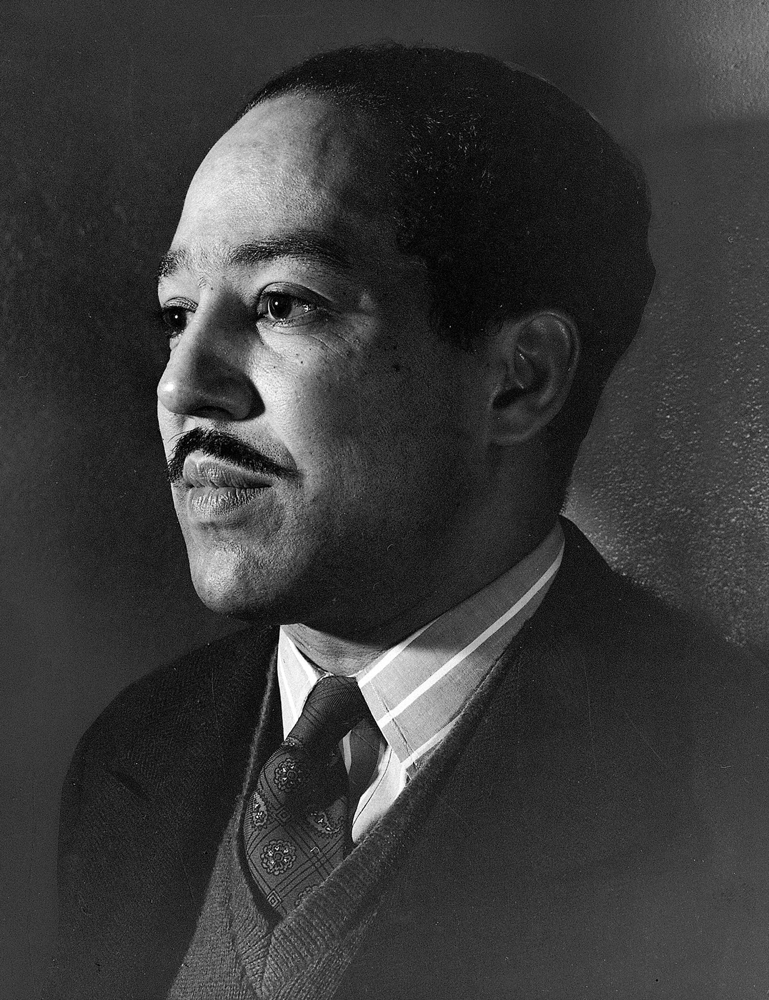

About Langston Hughes
According to Poetry Foundation, "Langston Hughes was a central
figure in the Harlem REnaissance, the flowering of black
intellectual, literary, and artistic life that took place
in the 1920s in a number of American cities, particularly Harlem.
A major poet, Hughes also wrote novels, short stories, essys, and plays.
He sought to honestly portray the joys and harships of working-class
black lives, avoiding both sentimental idealization and negative
stereotypes."

To Index Page